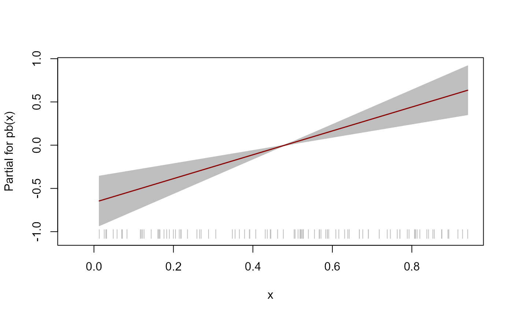

Describe
fitGEV(
formula,
data,
scoring = c("fisher", "quasi"),
mu.link = "identity",
sigma.link = "log",
xi.link = "identity",
stepLength = 1,
stepAttempts = 2,
stepReduce = 2,
steps = FALSE,
...
)a formula object, with the response on the left of an ~ operator, and the terms, separated by \(+\) operators, on the right.
Nonparametric smoothing terms are indicated by pb() for penalised beta splines, cs for smoothing splines, lo for loess smooth terms and random or ra
for random terms, e.g. y~cs(x,df=5)+x1+x2*x3. Additional smoothers can be added by creating the appropriate interface.
Interactions with nonparametric smooth terms are not fully supported, but will not produce errors;
they will simply produce the usual parametric interaction
a data frame containing the variables occurring in the formula, e.g. data=aids. If this is missing, the variables should be on the search list.
A character scalar. If scoring = "fisher" then the weights
used in the fitting algorithm are based on the expected Fisher
information, that is, a Fisher's scoring algorithm is used.
If scoring = "quasi" then these weights are based on the cross products
of the first derivatives of the log-likelihood, leading to a quasi Newton
scoring algorithm.
Character scalars to set the respective
link functions for the location (mu), scale (sigma) and shape (xi)
parameters. The latter is passed to gamlss::gamlss()
as nu.link.
A numeric vector of positive values. The initial
values of the step lengths mu.step, sigma.step and nu.step passed to
gamlss::gamlss.control() in the first attempt
to fit the model by calling gamlss::gamlss(). If
stepLength has a length that is less than 3 then stepLength is
recycled to have length 3.
A non-negative integer. If the first call to
gamlss::gamlss() throws an error then we make
stepAttempts further attempts to fit the model, each time dividing by 2
the values of mu.step, sigma.step and nu.step supplied to
gamlss::gamlss.control(). If
stepAttempts < 1 then no further attempts are made.
A number greater than 1. The factor by which the step
lengths in stepLength are reduced for each extra attempt to fit the
model. The default, stepReduce = 2 means that the step lengths are
halved for each extra attempt.
A logical scalar. Pass steps = TRUE to write to the
console the current value of stepLength for each call to
gamlss::gamlss().
Further arguments passed to
gamlss::gamlss(), in particular method, which sets
the fitting algorithm, with options RS(), CG() or mixed(). The
default, method = RS() seems to work well, as does method = mixed().
In contrast, method = CG() often requires the step length to be reduced
before convergence is achieved. fitGEV() attempts to do this
automatically. See stepAttempts. Pass trace = FALSE
(to gamlss::gamlss.control()) to avoid
writing to the console the global deviance after each outer iteration of
the gamlss fitting algorithm.
Returns a gamlss object. See the Value section of
gamlss::gamlss(). The class of the returned object is
c("gamlssx", "gamlss", "gam", "glm", "lm").
See gamlss::gamlss() for information about
the model and the fitting algorithm.
# Load gamlss, for the function pb()
library(gamlss)
#> Loading required package: splines
#> Loading required package: gamlss.data
#>
#> Attaching package: 'gamlss.data'
#> The following object is masked from 'package:datasets':
#>
#> sleep
#> Loading required package: gamlss.dist
#> Loading required package: MASS
#> Loading required package: nlme
#> Loading required package: parallel
#> ********** GAMLSS Version 5.4-12 **********
#> For more on GAMLSS look at https://www.gamlss.com/
#> Type gamlssNews() to see new features/changes/bug fixes.
##### Simulated data
set.seed(17012023)
n <- 100
x <- stats::runif(n)
mu <- 1 + 2 * x
sigma <- 1
xi <- 0.25
y <- nieve::rGEV(n = 1, loc = mu, scale = sigma, shape = xi)
data <- data.frame(y = as.numeric(y), x = x)
plot(x, y)
# Fit model using the default RS method with Fisher's scoring
mod <- fitGEV(y ~ gamlss::pb(x), data = data)
#> GAMLSS-RS iteration 1: Global Deviance = 323.1515
#> GAMLSS-RS iteration 2: Global Deviance = 320.4994
#> GAMLSS-RS iteration 3: Global Deviance = 320.1414
#> GAMLSS-RS iteration 4: Global Deviance = 320.0911
#> GAMLSS-RS iteration 5: Global Deviance = 320.084
#> GAMLSS-RS iteration 6: Global Deviance = 320.0831
# Summary of model fit
summary(mod)
#> ******************************************************************
#> Family: c("GEV", "Generalized Extreme Value")
#>
#> Call:
#> gamlss::gamlss(formula = y ~ gamlss::pb(x), family = GEVfisher(mu.link = "identity",
#> sigma.link = "log", nu.link = "identity"), data = data,
#> mu.step = c(1, 1, 1)[1], sigma.step = c(1, 1, 1
#> )[2], nu.step = c(1, 1, 1)[3])
#>
#> Fitting method: RS()
#>
#> ------------------------------------------------------------------
#> Mu link function: identity
#> Mu Coefficients:
#> Estimate Std. Error t value Pr(>|t|)
#> (Intercept) 1.2726 0.1921 6.626 2.00e-09 ***
#> gamlss::pb(x) 1.3830 0.3193 4.332 3.63e-05 ***
#> ---
#> Signif. codes: 0 '***' 0.001 '**' 0.01 '*' 0.05 '.' 0.1 ' ' 1
#>
#> ------------------------------------------------------------------
#> Sigma link function: log
#> Sigma Coefficients:
#> Estimate Std. Error t value Pr(>|t|)
#> (Intercept) -0.08760 0.09058 -0.967 0.336
#>
#> ------------------------------------------------------------------
#> Nu link function: identity
#> Nu Coefficients:
#> Estimate Std. Error t value Pr(>|t|)
#> (Intercept) 0.19264 0.08477 2.272 0.0253 *
#> ---
#> Signif. codes: 0 '***' 0.001 '**' 0.01 '*' 0.05 '.' 0.1 ' ' 1
#>
#> ------------------------------------------------------------------
#> No. of observations in the fit: 100
#> Degrees of Freedom for the fit: 4
#> Residual Deg. of Freedom: 96
#> at cycle: 6
#>
#> Global Deviance: 320.0831
#> AIC: 328.0831
#> SBC: 338.5037
#> ******************************************************************
# Residual diagnostic plots
plot(mod, xlab = "x", ylab = "y")
#> ******************************************************************
#> Summary of the Quantile Residuals
#> mean = -0.0005916633
#> variance = 1.009922
#> coef. of skewness = -0.007492234
#> coef. of kurtosis = 2.78055
#> Filliben correlation coefficient = 0.9973717
#> ******************************************************************
# Data plus fitted curve
plot(data$x, data$y, xlab = "x", ylab = "y")
lines(data$x, fitted(mod))
# Fit model using the mixed method and quasi-Newton scoring
# Use trace = FALSE to prevent writing the global deviance to the console
mod <- fitGEV(y ~ pb(x), data = data, method = mixed(), scoring = "quasi",
trace = FALSE)
# Fit model using the CG method
# The default step length of 1 needs to be reduced to enable convergence
# Use steps = TRUE to write the step lengths to the console
mod <- fitGEV(y ~ pb(x), data = data, method = CG(), steps = TRUE)
#> stepLength = 1 1 1
#> stepLength = 0.5 0.5 0.5
#> GAMLSS-CG iteration 1: Global Deviance = 337.4163
#> GAMLSS-CG iteration 2: Global Deviance = 322.5637
#> GAMLSS-CG iteration 3: Global Deviance = 321.03
#> GAMLSS-CG iteration 4: Global Deviance = 320.4416
#> GAMLSS-CG iteration 5: Global Deviance = 320.2167
#> GAMLSS-CG iteration 6: Global Deviance = 320.1324
#> GAMLSS-CG iteration 7: Global Deviance = 320.1011
#> GAMLSS-CG iteration 8: Global Deviance = 320.0896
#> GAMLSS-CG iteration 9: Global Deviance = 320.0855
#> GAMLSS-CG iteration 10: Global Deviance = 320.0839
#> GAMLSS-CG iteration 11: Global Deviance = 320.0834
##### Fremantle annual maximum sea levels
##### See also the gamlssx package README file
# Transform Year so that it is centred on 0
fremantle <- transform(fremantle, cYear = Year - median(Year))
# Plot sea level against year and against SOI
plot(fremantle$Year, fremantle$SeaLevel, xlab = "year", ylab = "sea level (m)")
plot(fremantle$SOI, fremantle$SeaLevel, xlab = "SOI", ylab = "sea level (m)")
# Fit a model with P-spline effects of cYear and SOI on location and scale
# The default links are identity for location and log for scale
mod <- fitGEV(SeaLevel ~ pb(cYear) + pb(SOI),
sigma.formula = ~ pb(cYear) + pb(SOI),
data = fremantle)
#> Error in fitGEV(SeaLevel ~ pb(cYear) + pb(SOI), sigma.formula = ~pb(cYear) + pb(SOI), data = fremantle): No convergence. An error was thrown from the last call to gamlss()
# Summary of model fit
summary(mod)
#> ******************************************************************
#> Family: c("GEV", "Generalized Extreme Value")
#>
#> Call:
#> gamlss::gamlss(formula = y ~ pb(x), family = GEVfisher(mu.link = "identity",
#> sigma.link = "log", nu.link = "identity"), data = data,
#> method = CG(), mu.step = c(0.5, 0.5, 0.5)[1], sigma.step = c(0.5,
#> 0.5, 0.5)[2], nu.step = c(0.5, 0.5, 0.5)[3])
#>
#> Fitting method: CG()
#>
#> ------------------------------------------------------------------
#> Mu link function: identity
#> Mu Coefficients:
#> Estimate Std. Error t value Pr(>|t|)
#> (Intercept) 1.2746 0.1923 6.628 1.99e-09 ***
#> pb(x) 1.3801 0.3198 4.315 3.88e-05 ***
#> ---
#> Signif. codes: 0 '***' 0.001 '**' 0.01 '*' 0.05 '.' 0.1 ' ' 1
#>
#> ------------------------------------------------------------------
#> Sigma link function: log
#> Sigma Coefficients:
#> Estimate Std. Error t value Pr(>|t|)
#> (Intercept) -0.08693 0.09060 -0.959 0.34
#>
#> ------------------------------------------------------------------
#> Nu link function: identity
#> Nu Coefficients:
#> Estimate Std. Error t value Pr(>|t|)
#> (Intercept) 0.19171 0.08467 2.264 0.0258 *
#> ---
#> Signif. codes: 0 '***' 0.001 '**' 0.01 '*' 0.05 '.' 0.1 ' ' 1
#>
#> ------------------------------------------------------------------
#> NOTE: Additive smoothing terms exist in the formulas:
#> i) Std. Error for smoothers are for the linear effect only.
#> ii) Std. Error for the linear terms maybe are not accurate.
#> ------------------------------------------------------------------
#> No. of observations in the fit: 100
#> Degrees of Freedom for the fit: 4.000271
#> Residual Deg. of Freedom: 95.99973
#> at cycle: 11
#>
#> Global Deviance: 320.0834
#> AIC: 328.0839
#> SBC: 338.5053
#> ******************************************************************
# Model diagnostic plots
plot(mod)
#> ******************************************************************
#> Summary of the Quantile Residuals
#> mean = -0.0006504536
#> variance = 1.009723
#> coef. of skewness = -0.004767227
#> coef. of kurtosis = 2.781026
#> Filliben correlation coefficient = 0.99738
#> ******************************************************************
# Worm plot
wp(mod)
#> Error in as.environment(DaTa): invalid object for 'as.environment'
# Plot of the fitted component smooth functions
# Note: gamlss::term.plot() does not include uncertainty about the intercept
# Location mu
term.plot(mod, rug = TRUE, pages = 1)

# Scale sigma
term.plot(mod, what = "sigma", rug = TRUE, pages = 1)
#> Error in term.plot(mod, what = "sigma", rug = TRUE, pages = 1): The model for sigma has only the constant fitted